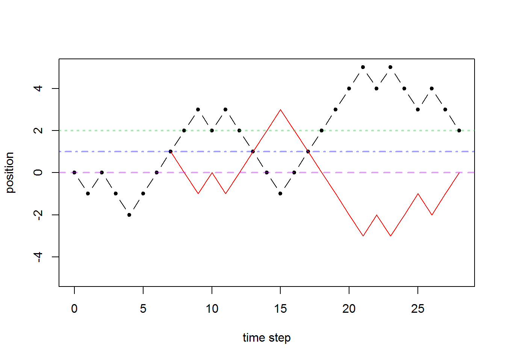

Chapter 6 Random walks
The random walk will be one of our first official stochastic process models. It models a particle on a line jumping one unit left or right with equal probability. Variations of this can be used for modeling many physical phenomena, including:
a viral particle floating in the air (a 3D random walk),
an animal moving in its habitat (2D for most land animals, but 1D can work for a restricted habitat), or
a stock price (1D).
6.1 The simple symmetric random walk (SSRW)
We let \(X_n\) be the state of the process at time step \(n\) and fix \(X_0=0\) (the particle starts at the origin). The particle moves left or right with equal probability, which is given as \[P(X_{n+1}=j-1\mid X_n=j)=\frac12,\] \[P(X_{n+1}=j+1\mid X_n=j)=\frac12.\]
More generally, we can let \(P(X_{n+1}=j+1\mid X_n=j)=p\) and \(P(X_{n+1}=j-1\mid X_n=j)=1-p\), and if \(p\neq\frac12\), then we call it a simple asymmetric random walk (SARW). We call this stochastic process “simple” because successive steps are independent and identically distributed and “symmetric” or “asymmetric” depending on whether the up and down probabilities are equivalent or not.
We will refer to the state of the process as the “level” or “location” at times, and rather than left or right, we will usually say “up” and “down” since we normally graph time horizontally and location on \(\mathbb Z\) vertically.
We consider the choice at each time step to go up or down as being independent of every other time step. This model is of a special class of stochastic processes called Markov chains, but we’ll discuss those in more detail later.
We can construct this model mathematically in more detail be letting the \(n^{th}\) step be random variable \(Y_n\) which takes values \(\pm1\) with equal probability and all being independent. We say that the \(Y_n\) are i.i.d. (independent and identically distributed) with \(P(Y_n=1)=P(Y_n=-1)=\frac12\) for all \(n\). Independence here means that if we want to calculate probabilities for multiple \(Y_n\) simultaneously, we can calculate them individually and multiply: \[P(Y_j=a,Y_k=b)=P(Y_j=a)P(Y_k=b)\] for any \(i,j\in\mathbb N\) (with \(i\neq j\)) and any \(a,b\in\{-1,1\}\). Then we can write \[X_n=\sum_{j=1}^n Y_j.\]
Example. Calculate \(P(X_3=3)\). This is only possible if \(Y_1=Y_2=Y_3=1\) and so we calculate \[P(Y_1=1,Y_2=1,Y_3=1)=P(Y_1=1)P(Y_2=1)P(Y_3=1)=\frac12\cdot\frac12\cdot\frac12=\frac18.\]
Example. Calculate \(P(X_2=0)\). This is only possible if \(Y_1=1,Y_2=-1\) or \(Y_1=-1,Y_2=1\) and so we calculate each probability and add the result. \[P(X_2=0)=P(Y_1=1,Y_2=-1)+P(Y_1=-1,Y_2=1)=\frac14+\frac14=\frac12.\]
The state space of the SSRW is thus the set of integers \(\mathbb Z\) and the time index set is \(\mathbb N_0\). The sample path space will be all infinitely long sequences of integers where consecutive integers only differ by \(\pm1\). We could say that the sample path space is all infinite sequences of integers, but most of those will have probability zero since any sequence which jumps outside of \(\pm1\) would be considered as not possible.
So we have our sequence of random variables \((X_0,X_1,X_2,\ldots)\). Of course, \(X_0\) is deterministically set to one, but we can still consider it a random variable with full probability mass on one. Now \(X_1\) is equally likely to be \(\pm1\). If \(X_1=1\), then \(X_2\) is equally likely to be \(0,2\), and if \(X_1=-1\), then \(X_2\) is equally likely to be \(0,-2\).
6.1.1 Definition of a random walk
Let \(X=(X_n)_{n\in\mathbb N_0}\) be a stochastic process. Then \(X\) is a simple random walk if
\(X_0=0\), and
\(Y_j=X_{j}-X_{j-1}\) are i.i.d. for \(j=1,2,\ldots\) with probabilities \(P(Y_j=1)=p\) and \(P(Y_j=-1)=1-p\).
What this tells us is that we can construct other random walks from a previous one. Let \(X_n\) be the SSRW. Then \(-X_n\) is also a SSRW. Let’s check that it satisfies the criteria: \(-X_0=0\) (since \(X_0=0\) because \(X_n\) is a SSRW), and \((-X_{j})-(-X_{j-1})=-Y_j\) and \(P(-Y_j=1)=P(Y_j=-1)=\frac12\), \(P(-Y_j=-1)=P(Y_j=1)=\frac12\) (where we use \(Y_j\) to represent the individual steps for the original SSRW \(X_n\)). Hence \(-X_n\) is an SSRW also!
One important thing to realize here is that when we write \(X_n\) and \(-X_n\) we do mean precisely that they are literally reflections of one another. In other words, if we know a particular value, say \(X_5=3\), then we know that the reflected process is exactly at level \(-3\) for time step \(5\). This is true because \(X_5\) is a random variable, and so anywhere we see \(X_5\), it is the same random variable whose value is determined by the same radom experiment (e.g. simulating a random walk path).
Example.
Let \(X_n\) be the SSRW. Let \(W_n\) be a stochastic process, and show that the following are also SSRW’s.
\(W_n=-X_n\)
\(W_n=X_{3+n}-X_3\)
\(W_n=\sum_{j=1}^n (X_{2j}-X_{2j-1})\) with \(W_0=0\)
We covered this example in the text above.
This is a shifted random walk. The \(W_n\) sample path is identical to the \(X_n\) sample path but starting from \(X_3\) and being shifted back to starting from the origin. In other words, we can imagine a completely simulated sample path for \(X_n\), and we just ignore the first three time steps and take the remaining part of the sample path and shift it back to starting at the origin, preserving its exact shape.
We calculate \(W_0=X_{3+0}-X_3=0\) and \(W_j-W_{j-1}=(X_{3+j}-X_3)-(X_{3+j-1}-X_3)=X_{3+j}-X_{3+j-1}=Y_{3+j}\) and know that \(Y_4,Y_5,\ldots\) are i.i.d. with the desired probabilities.The \(n^{th}\) step for \(W_n\) is the \(2n^{th}\) step for \(X_n\). In other words, \(W_n\) only considers the even steps. If \(X_n=\sum_{j=1}^n Y_j\), then \(W_n=\sum_{j=1}^n Y_{2j}\).
We see that \(W_0=0\) is given and calculate \(W_k-W_{k-1}=\sum_{j=1}^k (X_{2j}-X_{2j-1})-\sum_{j=1}^{k-1} (X_{2j}-X_{2j-1})=X_{2k}-X_{2k-1}=Y_{2k}\). We know that \(Y_2,Y_4,\ldots\) are i.i.d. with equal probability on \(\pm1\).
6.2 Distribution of \(X_n\)
Since \(X_n\) is a random sum of a bunch of plus and minus ones, we can relate it to a sum of Bernoulli random variables. If we think of flipping a fair coin \(n\) times and let \(H\) be the number of heads and \(T\) be the number of tails, then we must have \(H+T=n\). If the \(j^{th}\) coint flip is heads, we set \(Y_j=1\) and if it is tails, we set \(Y_j=-1\). In this way, we can reason that \[X_n=(\# \text{ heads})-(\# \text{ tails})=H-T=H-(n-H)=2H-n.\] Since we know that \(H\sim\mathsf{binom}(n,\frac12)\) (\(H\) is governed by the binomial distribution with \(n\) trials and \(p=\frac12\) probability of success), we can use this to calculate probabilities for \(X_n\):
Distribution of \(X_n\) for SSRW. \[P(X_n=j)=P(2H-n=j)=P\left(H=\frac{n+j}{2}\right)={n\choose \frac{n+j}{2}}\frac1{2^n}.\] More generally, for the asymmetric random walk, with \(p\neq\frac12\), we have \[P(X_n=j)={n\choose \frac{n+j}{2}}p^{\frac{n+j}{2}}(1-p)^{\frac{n-j}{2}}.\]
Now we refresh the normal approximation to the binomial.
Normal approximation to binomial. Let \(X\sim\mathsf{binom}(n,p)\), then for \(n\) large (usually \(n\geq 30\) with \(np\geq5\) and \(n(1-p)\geq5\) is acceptable, but it might still be a rough approximation). Then we can say that \[X\overset{\small approx}{\sim} \mathsf{N}(\mu=np,\sigma^2=np(1-p)).\]
The binomial is a discrete distribution, but the normal is a continuous distribution. Any time we use a continuous distribution to approximate a discrete distribution, it might be useful to use a continuity correction.
Continuity correction. If discrete random variable \(X\) has values \(x_1,x_2,\ldots\) and we wish to approximate \(P(X=x_j)\) by continuous random variable \(Y\), then we can integrate the probability density function of \(Y\) from halfway to the next \(x\)-values on the left and right: \[P(X=x_j)\approx P(x_j-(x_j-x_{j-1})/2 < Y \leq x_j+(x_j-x_{j-1})/2).\] For the normal approximation to the binomial random variable \(X\sim binom(n,p)\), this translates to using \(Y\sim N(np,np(1-p))\) and \[P(X=k)\approx P\left(k-\frac12 < Y \leq k+\frac12\right).\]
Normal approximation to distribution of \(X_n\) for SSRW. We have that \[P(X_n=j)=P(2H-n=j)=P\left(H=\frac{n+j}{2}\right)\] and that \(H\) is binomial distributed with parameters \(n,p\) and hence is approximately normally distributed with mean \(\mu=np\) and variance \(\sigma^2=np(1-p)\). Now we can then write \[P(X_n=j)=P(2H-n=j)=P\left(H=\frac{n+j}{2}\right)\approx P\left(\frac{n+j}{2}-\frac12<Y\leq \frac{n+j}{2}+\frac12\right)\] where \(Y\sim\mathsf N(\mu=np,\sigma^2=np(1-p))\).
In R we can calculate normal cumulative probabilities using pnorm(), so the above probability for \(P(X_n=j)\) is given by the R code (with the continuity correction)
pnorm((n+j)/2+1/2,mean=n*p,sd=sqrt(n*p*(1-p)))-pnorm((n+j)/2-1/2,mean=n*p,sd=sqrt(n*p*(1-p)))Example. Let’s calculate \(P(X_7=-3)\). We have \(n=7\), \(p=0.5\), and \(j=-3\). The exact calculation using the distribution we derived from the bionomial is:
\[P(X_7=-3)={7\choose\frac{7-3}{2}}\frac1{2^7}={7\choose2}\frac1{2^7}=\frac{7\cdot 3}{2^7}\approx0.1640625.\]
And using the normal approximation (with continuity correction) we get:
\(P(X_7=-3)\approx\)pnorm(2.5,7/2,sqrt(7)/2)-pnorm(1.5,7/2,sqrt(7)/2)\(\approx0.1595609\) which is a reasonable approximation.
We can make the R code a bit simpler though.
If \(X\sim N(\mu\sigma^2)\) then \(aX+b\sim N(a\mu+b,a^2\sigma^2)\). This means that \(aX+b\) is a normal random variable as well with \(E(aX+b)=a\mu+b\) and \(Var(aX+b=a^2\sigma^2)\). Since we are approximating \(H\), the number of up steps, as a normal random variable, then \(2H-n\) is also approximately normally distributed.
\[X_n=2H-n\overset{\small approx}{\sim}\mathsf{N}(\mu=2np-n,\sigma^2=4np(1-p)).\]
And for the SSRW this means
\[X_n=2H-n\overset{\small approx}{\sim}\mathsf{N}(\mu=0,\sigma^2=n).\]
Now to apply the continuity correction is a bit trickier though, because \(X_n\) only takes on values \(-n,-n+2,\ldots,n-2,n\). Instead of adding and subtracting \(\frac12\), we must add and subtract \(1\) and \(P(X_n=j)\) is approximated by pnorm(j+1,0,sqrt(n))-pnorm(j-1,0,sqrt(n)).
\[X_n\overset{approx}\sim \mathsf{N}(\mu=2np-n,\sigma^2=4np(1-p))\]
Partitioning. Note that when we calculate something like \(P(X_2=0)\), we are implicitly using the ideas of joint distributions, partitioning, and conditioning in teh following way \[\begin{aligned} P(X_2=0)&=P(X_1=1,X_2=0)+P(X_1=-1,X_2=0)\\ &=P(X_1=1)P(X_2=0\mid X_1=1)+P(X_1=-1)P(X_2=0\mid X_1=-1)\\ &=\frac12\cdot\frac12+\frac12\cdot\frac12. \end{aligned}\] Although, one can work out such probabilities by sketching a diagram and counting paths, etc.
Here is another example of the use of conditioning: \[ \begin{aligned} P(X_1=-1,X_2=0,X_3=1)&=P(X_1=-1)P(X_2=0,X_3=1\mid X_1=-1)\\ &=P(X_1=-1)P(X_2=0\mid X_1=-1)P(X_3=1\mid X_1=-1,X_2=0). \end{aligned}\] In general, we can calculate probabilities about the future state of the process given information about its current and past states, so a conditional probability like \(P(X_3=1\mid X_1=-1,X_2=0)\) will make sense given that we know the rules for the stochastic process \(X_n\). In most cases, we will only need to know the current state (this is memorylessness or the Markov property—more on that later). The simple random walk satisfies this, and we have \[P(X_3=1\mid X_1=-1,X_2=0)=(X_3=1\mid X_2=0).\]
6.3 Shift invariance & memorylessness
The simple random walk has properties which we’ll call shift invariance and *memorylessness**. Here \(X_n\) is a simple random walk which could be symmetric or asymmetric.
Shift invariance works by using the fact that successive steps are independent and identically distributed. As an example, if we know that \(X_5=3\), then from that point onward, the process behaves exactly like a random walk starting at initial state \(3\) and we can re-sync our clock so that time \(n=5\) is our new time zero. This gives that, for example, \(P(X_6=4\mid X_5=3)=P(X_1=4\mid X_0=3)\). Then we can shift the state lattice as well by subtracting 3 form both sides of the conditional bar: \(P(X_1=4\mid X_0=3)=P(X_1=4-3\mid X_0=3-3)=P(X_1=1\mid X_0=0)=P(X_1=1)\) where in the last step, we use the fact that starting form initial state zero is the default so we don’t need to specify it as a condition.
Shift invariance. \[P(X_{n+j}=k\mid X_j=\ell)=P(X_n=k-\ell)\]
The memoryless tells us that the distribution for future states is fully determined by the most recently known state. If we know the entire history of the process up to time \(n-1\), then to calculate probabilities for time step \(n\), we can discard the entire history except for the most recent state. Furthermore, even given incomplete information about the past states, we only care about the most recent one for calculating future probabilities.
Memorylessness. If we know the state of the process at time steps \(s_1<s_2<s_3<\cdots<s_m<n\), then to calculate probabilities for \(X_n\), we only use the most recent state: \[P(X_{n}=k\mid X_{s_j}=x_{s_j} \text{ for } j=1,2,\ldots,m)=P(X_{n}=k\mid X_{s_m}=x_{s_m}).\] In particular, if we know the full history of the process up to time step \(n-1\), then to calculate probabilities for time step \(n\), we discard the entire history except for the most recent known state: \[P(X_{n}=k\mid X_{n-1}=\ell_{n-1},X_{n-2}=\ell_{n-2},\ldots,X_{1}=\ell_{1})=P(X_{n}=k\mid X_{n-1}=\ell_{n-1}).\]
6.4 Reflection principle
Now we’ll look at a property of the sample path space which will help us understand a few more properties for the random walk. Consider some state \(m\) which we are interested in the RW hitting at some time step \(n=0,1,2,\ldots,k\). Clearly we must consider \(m\) between \(-k\) and \(k\) since the RW can only go that far in \(k\) time steps. We consider a sample path and the first time it hits level \(m\). We create a second sample path by tracing the first one up to this point and then reflecting everything after that initial hit of level \(m\).
In the following plot, we let \(m=2\). The red path is identical to the black dash-dot path up until the first hit of level \(2\). After that the red path is a reflection of the black dash-dot path.
There is a special pattern here, that any path that ends up, in the end, above level \(m\) will be reflected to create a path that ends up below level \(m\). Note that we are only considering paths that ultimately hit level \(m\), otherwise the reflection acros level \(m\) doesn’t work. We summarize this below.
The number of paths that hit level \(m\) and end up strictly above level \(m\) is the same as the number of paths that hit level \(m\) and end up strictly below level \(m\).
\[\#\{X_j=m \text{ for some } j\leq n, X_n>m\}=\#\{X_j=m \text{ for some } j\leq n, X_n<m\}\]
6.5 Maximum state reached
Let \(M_n=\max\{X_0,X_1,\ldots,X_n\}\) be the maximum level hit by the process up to time step \(n\).
\[P(M_n=k)=P(X_n=k)+P(X_{n}=k+1)\]
We derive this using the reflection principle and the fact that \(P(M_n=k)=P(M_n\geq k)-P(M_n\geq k+1)\).
\[P(M_n\geq k)=P(M_n\geq k,X_n>k)+P(M_n\geq k,X_n=k)+P(M_n\geq k,X_n<k)\] We can calculate the middle term using know methods: \[P(M_n\geq k,X_n=k)=P(X_n=k).\]
Using the reflection principle, we know that the events \(\{M_n\geq k,X_n>k\}\) and \(\{M_n\geq k,X_n>k\}\) have the same number of paths. For the SSRW, each of these paths is equally likely, so we get that \(P(M_n\geq k,X_n>k)=P(M_n\geq k,X_n<k)\) and hence only need to calculate \(P(M_n\geq k,X_n>k)\). But \(P(M_n\geq k,X_n>k)=P(X_n>k)\) which we can calculate from known formulas: \[P(M_n\geq k,X_n>k)=P(X_n>k)=\sum_{j=k+1}^n P(X_n=j).\]
Putting all this together we get (for the SSRW with \(p=0.5\)): \[\begin{aligned} P(M_n\geq k)&=P(M_n\geq k,X_n>k)+P(M_n\geq k,X_n=k)+P(M_n\geq k,X_n<k)\\ &=2P(M_n\geq k,X_n>k)+P(M_n\geq k,X_n=k)\\ &=2P(X_n>k)+P(X_n=k).\\ \end{aligned}\] And finally we see that \[\begin{aligned} P(M_n= k)&=P(M_n\geq k-P(M_n\geq k+1)\\ &=(2P(M_n\geq k,X_n>k)+P(M_n\geq k,X_n=k)\\ &=(2P(X_n>k)+P(X_n=k))-(2P(X_n>k+1)+P(X_n=k+1))\\ &=2P(X_n>k+1)+2P(X_n=k+1)+P(X_n=k)-2P(X_n>k+1)-P(X_n=k+1)\\ &=P(X_n=k+1)+P(X_n=k).\\ \end{aligned}\]
6.5.1 Maximum over infinite sample paths for \(p<1/2\)
If \(p<\frac12\) then the random walk will eventually hit some nonnegative maximum level and then go towards \(-\infty\) without ever exceeding its historical maximum level. Let \(M_\infty=\max\{X_0,X_1,\ldots\}\) be the maximum state reached over the entire sample path with infinitely-many time steps. Then we have \[P(M_\infty=k)=\frac{1-2p}{1-p}\left(\frac{p}{1-p}\right)^k \ \text{ for } \ k=0,1,\ldots.\] Hence \(M_\infty\) is a geometric random variable where we can think of a success as wander off to \(-\infty\) and never exceeding its previous maximum. The probability the walk (starting at \(X_0=0\)) never goes above zero is \(\frac{1-2p}{1-p}\). The probability it hits level 1 eventually is \(\frac p{1-p}\). From that point, it is probability \(\frac{1-2p}{1-p}\) that it never exceeds level 1. Working inductively, we can reason that \(\left(\frac p{1-p}\right)^k\) is the probability it eventually hits level \(k\) and then multiplying by \(\frac{1-2p}{1-p}\) that the walk never again exceeds its current level.
6.6 Hitting times
We may be interested in how long it takes the random walk to hit a certain state. We refer to this as a hitting time. For example, if we are modeling a stock price with a random walk, and buy the stock for $250 and we wish to gain a profit of $5, then we might be interested in the how long we expect to wait for the stock to hit $255.
6.6.1 Hitting time for state \(1\)
We wish to know how long it takes for the SARW to hit level \(1\). Let \(T_1=\min\{n>0 : X_n=1\}\) which we call the hitting time for state \(1\).
Theorem (Hitting time for state \(1\)).
\[P(T_1=2k+1)=\frac1{k+1}{2k\choose k}p^{k+1}(1-p)^k, \ k=0,1,2,\ldots.\] Show/hide proof.
Proof. We’ll first see that the number of paths that end at \(X_{2k}=0\) and hit level 1 somewhere before that is the same as the number of paths that start at \(X_0=0\) and end at \(X_{2k}=2\)… See the graph below.
Draw any path for yourself that goes form \(X_0=0\) to \(X_{2k}=2\) for any \(k\)-value. Then figure out the first time it hits level 1 and reflect the rest of the path after that around level 1. Then you get a path that goes form \(X_0=0\) to \(X_{2k}=0\) and it hits level 1 somewhere. This is the number of paths in the event \(\{M_{2k}\geq1,X_{2k}=0\}\). An example is shown below

Now \(P(T_1=2k+1)\) is exactly the probability that the walk hits state \(0\) at time \(2k\) (and has never hit state \(1\) at all) and then goes up to state \(1\): \[P(T_1=2k+1)=P(X_{2k}=0 \text{ and has never hit state 1 (by time $2k$)}) \cdot p .\] The event \(\{\text{has never hit state 1}\}\) is exactly the event that the maximum is zero: \[\{\text{has never hit state 1 (by time $2k$)}\}=\{M_{2k}=0\}.\] So we have \[P(T_1=2k+1)=P(X_{2k}=0, M_{2k}=0) \cdot p .\]
Now we know how many paths have \(X_{2k}=0\), and we need to subtract form that event, the number of paths that go above \(0\) somewhere, i.e. the number of paths in the event \(\{X_{2k}=0,M_{2k}\geq1\}\). We have already worked out above (by the reflection principle) that this is the same as in \(\{X_{2k}=2\}\).
So performing the counting of paths we have: \[\# \{X_{2k}=0, M_{2k}\geq 1 \}=\#\{X_{2k}=2\}={2k\choose k-1}.\] And hence, the number of paths which never hit state \(1\) by time \(2k\) is \[ \begin{aligned} \# \{ X_{2k}=0, M_{2k}=0 \}&=\# \{X_{2k}=0\}-\# \{X_{2k}=0, M_{2k}\geq1 \}\\ &={2k\choose k}-{2k\choose k-1}\\ &=\frac{(2k)!}{k!k!}-\frac{(2k)!}{(k-1)!(k+1)!}\\ &=\frac{(2k)!}{(k-1)!k!} \left(\frac1k-\frac1{k+1}\right)\\ &=\frac{(2k)!}{(k-1)!k!} \cdot\frac1{k(k+1)}\\ &=\frac1{k+1}{2k\choose k}. \end{aligned}\]
Now since every path that starts at \(X_0=0\) and ends at \(X_{2k}=0\) is equally likely with \(k\) up steps and \(k\) downsteps, they each have probability \(p^k(1-p)^k\), and there are \(\frac1{k+1}{2k\choose k}\) of those paths that never hit state \(1\). Now we put this all together to see that \[\begin{aligned} P(T_1=2k+1)&=P(X_{2k}=0, M_{2k}=0) \cdot p \\ &=\# \{ X_{2k}=0, M_{2k}=0 \} p^k (1-p)^k \cdot p\\ &=\frac1{k+1}{2k\choose k}p^{k+1}(1-p)^k. \end{aligned}\] \(\square\)
By symmetry, we can understand the distribution for \(T_{-1}\), the hitting time for state \(-1\) as well. For the SSRW, \(P(T_{-1}=k)=P(T_1=k)\) since there is no difference in the probabilities of going up or down. In fact \(-X_n\) (the reflected SSRW) has the same distribution as \(X_n\), and \(T_{-1}\) for \(X_n\) is exactly the same thing as \(T_1\) for \(-X_n\). Since the latter is also a SSRW, then \(T_1\) is exactly distributed according to the above given formula. If the walk was asymmetric with \(p\neq\frac12\), then \(T_{-1}\) is distributed according to \(T_1\) for the reflected (about 0) random walk, but with probabilities of up and down steps swapped. E.g. \(P(T_{-1}=k)\) for the SARW with \(p\) probability of up step is identical to \(P(T_{1}=k)\) for the SARW with \(1-p\) probability of up step.
We also have that \(E(T_1)=\infty\) for \(p\leq 1/2\) and that, for \(p>1/2\), \[E(T_1)=\frac1{2p-1}.\]
6.6.2 Hitting time for other states
If we are interested in how long it takes for the process to hit state \(2\), then we wait for it to hit state \(1\). From this point, we only need to wait for it to go up another +1 from the current state, which is equivalent for waiting a random time which is distributed exactly the same as the hitting time for state one. Let \(T_2\) be the hitting time for state \(2.\) What this reasoning shows is that \(T_2=\tau_1+\tau_2\) where \(\tau_1\) and \(\tau_2\) have the same distribution as \(T_1\) and are independent.
In general, letting \(T_k\) be the hitting time for state \(k\), we have \[T_k=\sum_{j=1}^k \tau_j\] where \(\tau_j\) are i.i.d. and distributed identically to \(T_1\).
Example. For example \(T_2=\tau_1+\tau_2\). If we wish to calculate \(P(T_2=4)\) then we need to consider all possibilities for \(\tau_1,\tau_2\) that sum to give us 4 total time steps, and we use independence of the \(\tau_j\).
\[\begin{aligned} P(T_2=4)&=P(\tau_1+\tau_2=4)\\ &=P(\tau_1=1,\tau_2=3)+P(\tau_1=3,\tau_2=1)\\ &=P(\tau_1=1)P(\tau_2=3)+P(\tau_1=3)P(\tau_2=1)\\ &=P(T_1=1)P(T_1=3)+P(T_1=3)P(T_2=1)\\ &=2P(T_1=1)P(T_1=3)\\ &=2 \frac1{0+1}{2\cdot 0\choose 0}p^{0+1}(1-p)^0 \frac1{1+1}{2\cdot 1\choose 1}p^{1+1}(1-p)^1 \\ &=2 p^3 (1-p) \\ \end{aligned}\]
The hitting time theorem is given below and allows us to calculate hitting time probabilities for any state for the SARW with any \(p\)-value.
Hitting time theorem. Let \(X_n\) be a simple random walk with \(p\) the probability of stepping up. Let \(T_k\) be the hitting time for level \(k\geq0\). We have \[P(T_k=m)=\frac km P(X_m=k)\]
Here is an example usage of the hitting time theorem.
Example. Let \(X_n\) be a simple random walk with \(p\) the probability of stepping up. Let \(T_k\) be the hitting time for level \(k\geq0\). We have \[P(T_3=5)=\frac 35 P(X_5=3)=\frac35 {5\choose4}p^4(1-p)=3p^4(1-p).\]
The hitting time \(T_k\) for state \(k\) can be thought of in the following way. We wait for the walk to hit state 1 (a \(T_1\) random number of time steps), and then from there, we consider it to be starting a new walk and then wait for it to go up one level from its new starting point (this is another \(T_1\) random number of time steps), and then repeat this always waiting for it to go up one level. Each time we wait for it to go up \(+1\) level, we wait for a random number of time steps, and each of these waits is equivalent to \(T_1\) the time to hit level one. Since non-overlapping time periods are independent, we have a sequence of independent random wait times… i.e. a sequence of i.i.d. \(T_1\)’s.
For each \(j\in\mathbb N\), let \(T_1^{(j)}\) be a “copy” of the wait time to hit state 1 \(T_1\). This means that we can plug in whatever we want for \(j\) and we’ll always have \(P(T_1^{(j)}=m)=P(T_1=m)\). We can think of \(T_k\) as the sum of \(k\) of these random times: \[T_k=\sum_{j=1}^kT_1^{(j)}.\] Now we can calculate the expected value using linearity of expected value operator: \[E(T_k)=E\left(\sum_{j=1}^kT_1^{(j)}\right)=\sum_{j=1}^kE\left(T_1^{(j)}\right)=kE(T_1).\] So now, we can calculate the expected wait time to hit any level using the expected wait time to hit level one!
Theorem. \[E(T_k)=k E(T_1)\]
6.7 Return time to state \(0\)
We have that \(X_0=0\) initially. We want to know how long it takes for the random walk to return to state zero. Let \(T_0=\min\{n>0 : X_n=0\}\) which we call the return time to zero. We can calculate \(P(T_0=2k)\) for \(k=1,2,\ldots\) by sketching a graph and counting paths. For example, \(P(T_0=2)=\frac12\) since this means the first two time steps are up then down or vice versa. Similarly, we can calculate \(P(T_0=4)=\frac18\). The general formula is given below.
Return time to state \(0\).
\[P(T_0=2k)=\frac1{2k-1}{2k\choose k}p^{k}(1-p)^k, \ k=1,2,\ldots.\]
This is also the return time to the initial state more generally, if we initialized the walk with \(X_0\neq0\).
Here is a derivation of the formula using conditioning on the initial state. Conditioning in this way is a very important technique which can often simplify computations. \[ \begin{aligned} P(T_0=2k)&=P(T_0=2k\mid X_1=1)P(X_1=1)+P(T_0=2k\mid X_1=-1)P(X_1=-1)\\ &=P(T_0=2k\mid X_1=1)p+P(T_0=2k\mid X_1=-1)(1-p)\\ &=P(T_{-1}=2k-1)p+P(T_1=2k-1)(1-p)\\ \end{aligned} \] This works because conditioning on \(X_1=1\), in order to return back to state \(0\), we must wait for how long it takes the walk to first go down one level, and (by shift invariance) this probability is identical to starting at zero and waiting to hit state \(-1\).
Now we already know how to calculate probabilities for \(T_1\) and \(T_{-1}\) (which is identical to \(T_1\) for a reflected walk with \(p\) and \(1-p\) swapped). \[P(T_1=2k-1)=\frac1{k}{2k-2\choose k-1}p^{k}(1-p)^{k-1}\] \[P(T_{-1}=2k-1)=\frac1{k}{2k-2\choose k-1}p^{k-1}(1-p)^{k}\] \[ \begin{aligned} P(T_0=2k)&=\frac2{k}{2k-2\choose k-1} p^k(1-p)^k\\ \end{aligned} \] Now we just need to show the coefficient simplifies to \(\frac1{2k-1}{2k\choose k}.\)
\[\begin{aligned} \frac2{k}{2k-2\choose k-1}&=\frac2k \frac{(2k-2)!}{(k-1)!(k-1)!}\\ &=\frac2{\color{blue}{k}} \frac{\color{red}{(2k-2)!}}{\color{blue}{(k-1)!}\color{green}{(k-1)!}} \cdot \frac{\color{red}{2k(2k-1)}}{2\color{green}{k}(2k-1)}\\ &=\frac{\color{red}{(2k)!}}{\color{blue}{k!}\color{green}{k!}} \cdot \frac{1}{(2k-1)}\\ &={2k \choose k} \cdot \frac{1}{(2k-1)} \end{aligned}\] This finishes the calculation.
Here is a table for returns to zero with \(T_0\) the wait time to return to zero and \(N\) the number of times that we return to zero. Note that the actual number of times the walk is in state zero is \(N+1\) since it always starts in state zero.
| \(r=P(T_0<\infty)\) | \(P(T_0=\infty)\) | \(E(T_0)\) | \(P(N<\infty)\) | \(P(N=\infty)\) | \(E(N)=\frac{r}{1-r}\) | |
|---|---|---|---|---|---|---|
| \(p<\frac12\) | \(2p\) | \(1-2p\) | \(\infty\) | 1 | 0 | \(\frac{2p}{1-2p}\) |
| \(p=\frac12\) | 1 | 0 | \(\infty\) | 0 | 1 | \(\infty\) |
| \(p>\frac12\) | \(2(1-p)\) | \(2p-1\) | \(\infty\) | 1 | 0 | \(\frac{2-2p}{2p-1}\) |
Summary
Summary of notation, formulas, and terminology
For \(X_n\) the simple 1D random walk with \(p\) probability of an up step (and \(1-p\) down step):
Distribution of \(X_n\):
\(P(X_n=j)={n\choose (n+j)/2}p^{(n+j)/2}(1-p)^{(n-j)/2}\)
For SSRW: \(P(X_n=j)={n\choose (n+j)/2}\frac1{2^n}\)
\(P(X_n=j)\approx\)pnorm(j+1,2*n*p-n,sqrt(4*n*p*(1-p)))-pnorm(j-1,2*n*p-n,sqrt(4*n*p*(1-p)))
For SSRW: \(P(X_n=j)\approx\)pnorm(j+1,0,sqrt(n)-pnorm(j-1,0,sqrt(n))
Shift invariance & memorylessness:
\(P(X_{n+m}=k\mid X_m=j)=P(X_{n}=k-j)\)
\(P(X_{n}=k\mid X_{n-1}=j,X_{n-2}=a_{n-2},\ldots,X_{2}=a_{2},X_{1}=a_{1})=P(X_{n}=k\mid X_{n-1}=j)\)
Maximum of SSRW:
\(P(M_n=k)=P(X_n=k)+P(X_n=k+1)\), \(M_n=\) max level reached in first \(n\) time steps
Maximum of SARW w/ \(p<1/2\):
\(P(M_\infty=k)=\left( \frac p{1-p}\right)^k\left( \frac {1-2p}{1-p}\right)\), \(M_\infty=\) max level reached over the entire walk covering (for infinitely many time steps)
Hitting times:
\(P(T_1=2k+1)=\frac1{k+1}{2k\choose k}\frac1{2^{2k+1}}\), \(T_1=~\)first time SSRW (\(p=\frac12\)) to hit state \(1\)
\(P(T_1=2k+1)=\frac1{k+1}{2k\choose k}p^{k+1}(1-p)^k\), \(T_1=~\)first time SARW (any \(p\in[0,1]\)) to hit state \(1\)
\(P(T_k=m)=\frac mk P(X_m=k)\), \(T_k=~\)first time SARW hits state \(k\)
Return time to initial state:
\(P(T_0=2k)=\frac1{2k-1}{2k\choose k}p^{k}(1-p)^k\), \(T_0=~\)first time SARW returns to state \(0\)